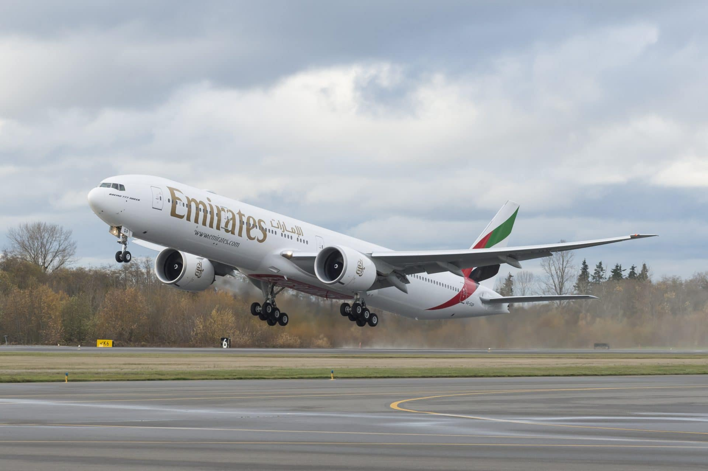
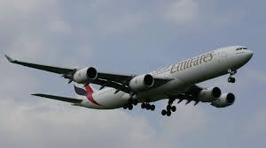
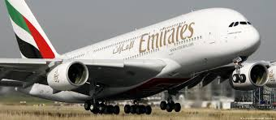
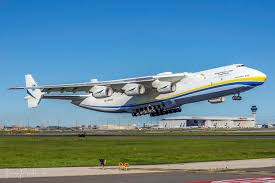

Big Planes
Boeing 777
The 777 is the world's largest twinjet and the most-built wide-body airliner. The jetliner was designed to bridge the gap between Boeing's other wide body ...
read moreBoeing 747

The Boeing 747 is a large, long-range wide-body airliner designed and manufactured by Boeing Commercial Airplanes in the United States between 1968 and 2023. ...
read moreBoeing 747 Dreamlifter

The Boeing Dreamlifter, officially the 747-400 Large Cargo Freighter (LCF), is a wide-body cargo aircraft modified extensively from the Boeing 747-400 ...
read moreAirbus A340
The Airbus A340 is a long-range, wide-body passenger airliner that was developed and produced by Airbus. In the mid-1970s, Airbus conceived several ...
read moreAirbus A380
The Airbus A380 is a very large wide-body airliner that was developed and produced by Airbus. It is the world's largest passenger airliner and only ...
read moreAntonov Mriya 225
The Antonov An-225 Mriya was a strategic airlift cargo aircraft designed and produced by the Antonov Design Bureau in the Soviet Union. An-225 Mriya.
read more